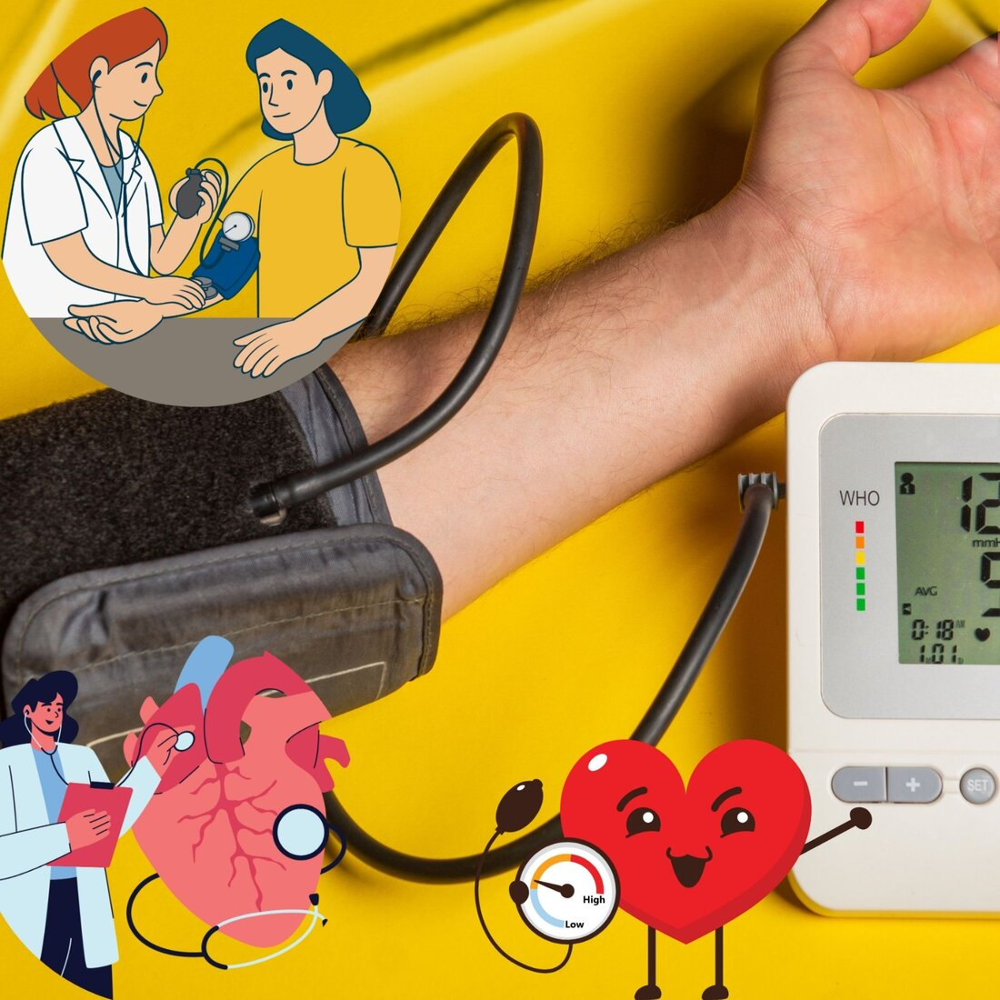

What Blood Pressure Is Considered Too High?
A reading is generally called elevated once systolic pressure reaches 120–129 mmHg with a normal diastolic figure, and hypertension is diagnosed at 140/90 mmHg or above on repeated measurements — or from 130/80 mmHg under some newer guidelines. The exact cut-off matters less than the trend: a reading that stays high on more than one occasion is what changes the management plan, not a single number taken once.
What the two numbers mean
The top number (systolic) is the pressure in your arteries as the heart contracts and pushes blood out. The bottom number (diastolic) is the pressure between beats, while the heart is relaxed and refilling. Both matter, and either one being raised on its own — not just the two together — is enough to count as high blood pressure.
Blood pressure categories
- Normal: below 120/80 mmHg
- Elevated: systolic 120–129 mmHg with diastolic below 80 mmHg
- Stage 1 hypertension: 130–139 systolic or 80–89 diastolic
- Stage 2 hypertension: 140/90 mmHg or higher
- Hypertensive crisis: above 180/120 mmHg
These thresholds come from the commonly used American College of Cardiology/American Heart Association scale. European (ESC/ESH) and WHO definitions are structured a little differently and set the diagnostic threshold for hypertension at 140/90 mmHg, but agree on the same broad picture: the higher and more sustained the reading, the greater the risk to the heart, kidneys, brain, and eyes over time.
When a high reading is an emergency
A reading above 180/120 mmHg is a hypertensive crisis. If it comes with any of the following, it's a hypertensive emergency and needs care immediately — not "in the next few days":
- Severe headache
- Chest pain or shortness of breath
- Blurred or altered vision
- Confusion, difficulty speaking, or weakness on one side
- Nosebleed that won't stop, or severe anxiety with the above
If any of these are present alongside a very high reading, go to the nearest emergency department or call for emergency transport rather than waiting to recheck it at home.
One reading isn't a diagnosis
Blood pressure varies through the day, and a single high number can reflect stress, pain, caffeine, or simply the anxiety of being measured ("white coat" effect). Without alarming symptoms, a high reading is generally rechecked on a separate occasion, or tracked with home monitoring over several days, before a diagnosis of hypertension is made and treatment is started. This is also why a home monitor and a written log of readings — date, time, and result — are so useful to bring to a consultation.
Have a question about your own readings? Message directly and ask.
Message on WhatsAppThis article is general health information and does not replace a medical consultation. In a medical emergency, call SAMU (114) or go to your nearest hospital.